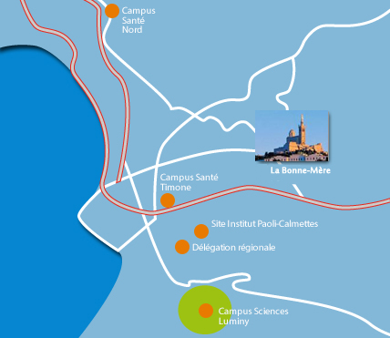

Présentation de l'entreprise
L' Institut National de la Santé Et de la Recherche Médicale ( INSERM ) est un EPST: Établissement Public à caractère Scientifique et Technique qui se trouve en Provence Alpes Côtes d'Azur à Marseille dans la faculté de médecine de la Timone. Il faut savoir que l'INSERM est le seul organisme public de recherche français entièrement dédié à la santé humaine. On cherche là bas à améliorer la santé de tous par le progrès des connaissances sur le vivant et sur les maladies, l’innovation dans les traitements et la recherche en santé publique. L'INSERM est un institut de taille moyenne comprenant environ 100 personnes dans l'unité de recherche:
- 1 directeur
- 8 équipes de recherche
- 4 plateau technique
Il y a du personnel administratif, des chercheurs , des charger de recherche (CR), des directeurs de recherche (DR), des maitres de conférence universelle (MCU), des médecins, des professeurs universitaires (PU), des praticiens hospitaliers (PH), des ingénieurs techniciens administratifs (ITA), des techniciens ingénieurs, des étudiants en thèse et post-doctorat et enfin les stagiaires. L'INSERM possède plusieurs unités de recherche, mais moi j'ai fais mon stage dans l'unité mixte de recherche 910 (UMR_S 910). L'INSERM n'est donc pas une entreprise comme on a l'habitude de le voir car celle ci n'a pas pour but de faire des bénéfices et ses seuls client sont des patients. L'argent fourni à l'INSERM pour faire des recherches vient des deux tutelles: INSERM et AMU (Aix Marseille Université) et des associations comme le téléthon, de ARN (Agence Nationale de la Recherche) et de l'Europe. Cet EPST a beaucoup de fournisseurs de toutes sortes: tout ceux à qui elle achète des produits (ça peut être une blouse, comme des pipettes ou des enzymes, des machines ou encore des frigo...) Le principal but de cet institut est de produire du savoir, dans certain cas elle dépose des brevets. N'étant pas une entreprise commerciale l'INSERM n'a pas à faire des publicités. Par contre des articles sont publiés dans des revue scientifique (texte paru dans un magasine destiné aux scientifiques avec des informations édités par ceux-ci), il y à aussi un site web (qui n'est pas terminé). Comme ils ne vendent rien qui intéresse les non-scientifique il y a aucune publicités.  Les outils utilisés ne sont pas seulement des machines, pour les faire fonctionner il faut aussi des « instruments humains » qui ont des idées. L'ISERM collabore avec d'autres laboratoires pour communiquer les savoirs différents entre les chercheurs et leurs équipes. L'institut soustraite parfois des expériences. L'INSERM étant un gros institut national, beaucoup de formations sont proposées. Sur place une personne est chargée de transmettre l'information concernant les formations.
{kind=link}
L'unité 910
J'ai pratiqué un stage dans l'unité 910 de l'INSERM. L'unité de recherche est une CAD (communication auto visuelle dynamique), elle est financée par L'INSERM et l'université dans laquelle elle exerce son activité. L'université effectue aussi la gestion de l'INSERM. L'activité de l' unité 910 de l'INSERM est la génétique et génomique fonctionnelle soit la recherche médical. Une organisation de personne veille à ce que tout le monde fasse de la recherches. BUT: faire des expériences/ expérimentations. C'est l'INSERM et l'université qui paye les salaires de l'unité 910. Mais l'unité de recherche 910 est composée de plusieurs équipes, moi j'ai pu observer l'équipe de Valérie Delague durant mon stage. Elle travaille sur la maladie de Charcot-Marie-Tooth. (maladie génétique qui forme un groupe hétérogène de maladie du nerf périphérique) Il faut savoir que chaque équipe est autonome dans ses recherches.